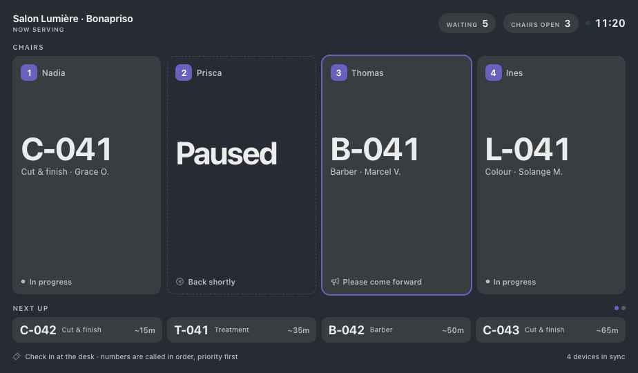

Module guide
Queue
Tickets, counters and the now-serving screen — for any place where people wait: a bank branch, a clinic, a town hall, a salon, a kitchen pass. Shared chapters are in the Platform chapters.
Queue · Part 1
Is this for me?
Setup offers a starting shape for each kind of place. The way of working is the same: take a ticket, wait on the screen, get called to a counter.
Withdrawal, deposit, account services, advisor — several counters.
New application, renewal, technical help, payments.
Walk-ins wait by service; each chair calls the next.
Dine-in, takeaway, delivery tickets called for collection.
What you get at each level
LiteCall the next person
- Call next, recall, no-show
- Several counters or chairs
MidThe right counter
- Service categories with their own letters
- The wall display
- Priority tickets
FullManage the wait
- Supervise: move people, open counters
- Waiting and serving times against target
- Text the customer when they're next
Ticket to counter
A Friday morning at a bank branch in Douala. Follow ticket W-042 from the entrance to Counter 2.
Now serving
Next up
- Mme Ngo takes ticket W-042 for a withdrawal at the entrance. 4 people are ahead of her.
- Counter 1 calls W-040. Everyone moves up; her number climbs the screen.
- Counter 3 takes a deposit. Deposits and withdrawals share counters, oldest first.
- She is next. With SMS on, her phone is told now.
- Counter 2 taps Call next: W-042 · Counter 2, with a chime.
- Served. Her wait — 14 minutes against a 15-minute target — goes into the day's report.
Queue · Part 2
Set up Lite
- Choose a starting shapeBank, public office, salon or kitchen pass.
- CountersName each counter or chair, and the services it handles.
- ServicesEach with a letter and an average time — W Withdrawal 6 min, D Deposit 5 min. Mid
- IntakeA tablet at the entrance, a ticket printer, or staff issuing tickets.
Ticket printers — available soon - The displayA TV on the wall — see Signage.
Queue · Part 3
Run the day
| Moment | What you do | Screen | Tier |
|---|---|---|---|
| Opening | Open the counters that are staffed. | Serve | Lite |
| Customers arrive | They choose a service and take a ticket. | Intake | Lite |
| At the counter | Call next · Recall · No-show · Done. | Serve | Lite |
| A priority customer | Elderly, pregnant, disabled: give a priority ticket; it goes first. | Intake | Mid |
| A break | Pause the counter; the screen shows Back shortly. | Serve | Lite |
| The line grows | Open another counter or move tickets to it. | Supervise | Full |
| Closing | Waiting and serving times against target, by service. | Supervise | Full |
Queue · Part 4
Screens
Queue has five modes: Display, Serve, Intake, Supervise and Setup. Each device runs the one it needs — the TV runs Display, each counter runs Serve.
Display Mid

123456- Each counter or chair — the ticket it is serving and the service.
- Paused — Back shortly; no one is sent there.
- Please come forward — the ticket just called, highlighted.
- Next up — with an estimated wait for each.
- Waiting · open — how many are waiting, how many counters are open.
- Devices in sync — the screen, the counters and intake on the same network.
Intake, Serve, Supervise
Intake Lite
Big buttons, one per service. The customer taps and gets a number — printed, on screen, or by SMS.
Serve Lite
One counter: Call next, Recall, No-show, Done, Pause. Shows who is waiting for this counter's services.
Supervise Full
Every counter at a glance; open, close, move a ticket, waiting times against target.
Queue · Part 5
When something goes wrong
Their tickets stay in line; other counters that handle the service call them next. Nobody has to take a new ticket.
Recall it, or mark No-show. A no-show who comes back can be put back at the front by the supervisor.
Counters keep calling; say the number out loud until the TV is back. The TV catches up when it reconnects.
Give a priority ticket at intake. It goes ahead of normal tickets for the same service.
Devices on battery keep working on the local network. The line is the same when power returns.
Queue · Part 6
Go further
Service categories Mid
Different letters and counters for each reason for waiting.
Waiting-time report Full
Waiting and serving times against target, by service, counter and hour.
SMS when next
Customers wait outside or nearby; their phone tells them when to come in.
Print and pin up
Staff task cards
2. Call next.
3. Not here? Recall once, then No-show.
4. Finished: Done.
5. Break: Pause.
2. Tap the service → ticket.
3. Elderly, pregnant or disabled? Priority.
4. Point to the screen.
2. Line growing? Open a counter.
3. Move tickets if a counter closes.
4. Closing: read the times report.
Koomzo User Guide · Queue · Version 2 · Screens shown are from the current Koomzo prototype. Names and numbers are examples.